🧭 1. Tổng quan điểm đến
Nằm ở vị trí cửa ngõ cực nam của tam giác châu thổ sông Hồng, Ninh Bình sở hữu vị thế địa lý vô cùng đắc địa, là cầu nối chuyển tiếp giữa vùng kinh tế đồng bằng Bắc Bộ và vùng duyên hải Bắc Trung Bộ. Nơi đây từng được Tiên Hoàng Đế Đinh Bộ Lĩnh chọn làm kinh đô đầu tiên của nhà nước phong kiến trung ương tập quyền Đại Cồ Việt vào năm 968 nhờ bức tường thành thiên nhiên bằng núi đá vôi trùng điệp, hiểm trở và hệ thống hang động sông ngòi liên hoàn bao bọc.
Ngày 23/6/2014, tại kỳ họp lần thứ 38 của Ủy ban Di sản Thế giới tổ chức ở Doha (Qatar), Quần thể danh thắng Tràng An đã chính thức được UNESCO công nhận là Di sản Văn hóa và Thiên nhiên Thế giới. Đây là di sản hỗn hợp (di sản kép) đầu tiên và duy nhất của Việt Nam cũng như toàn khu vực Đông Nam Á, khẳng định giá trị ngoại hạng toàn cầu về cả địa chất - địa mạo karst và dấu ấn sinh sống của người tiền sử từ hơn 30.000 năm trước.
📜 2. Vị trí địa lý & Dấu ấn lịch sử
Ninh Bình trải dài từ tọa độ địa lý 20°00' đến 20°27' vĩ độ Bắc và 105°40' đến 106°10' kinh độ Đông, tiếp giáp tỉnh Hà Nam ở phía bắc, Nam Định ở phía đông bắc, Hòa Bình ở phía tây bắc, Thanh Hóa ở phía tây và nam, cùng bờ biển dài gần 18km trông ra vịnh Bắc Bộ ở huyện Kim Sơn. Sự giao thoa của 3 vùng sinh thái: đồi núi bán sơn địa phía tây, đồng bằng chiêm trũng trung tâm và vùng bãi bồi ven biển tạo nên hệ sinh thái đa dạng, khí hậu cận nhiệt đới ẩm 4 mùa rõ nét.
⚖️ Căn cứ Pháp lý & Quyết định Xếp hạng Di sản Chính thống
Hồ sơ khoa học và giá trị di sản của Ninh Bình được xác lập trên nền tảng các văn bản quản lý và công ước pháp lý nhà nước:
- Văn bản UNESCO số 38 COM 8B.14 (23/6/2014): Kỳ họp lần thứ 38 Ủy ban Di sản Thế giới tại Doha (Qatar) ghi danh Quần thể danh thắng Tràng An là Di sản Văn hóa và Thiên nhiên thế giới theo tiêu chí (v) văn hóa truyền thống cư trú, (vii) thẩm mỹ cảnh quan tuyệt mỹ và (viii) địa chất karst nhiệt đới ngập nước.
- Quyết định số 548/QĐ-TTg ngày 10/5/2012 của Thủ tướng Chính phủ: Xếp hạng Di tích quốc gia đặc biệt đối với Khu di tích lịch sử và kiến trúc nghệ thuật Cố đô Hoa Lư và Danh lam thắng cảnh Tràng An - Tam Cốc - Bích Động.
- Công ước Ramsar Quốc tế (22/5/2019): Ban Thư ký Công ước Ramsar công nhận Khu bảo tồn thiên nhiên đất ngập nước Vân Long là Khu Ramsar số 2360 của thế giới và là khu Ramsar thứ 9 của Việt Nam.
- Quyết định số 2684/QĐ-BVHTTDL của Bộ Văn hóa, Thể thao và Du lịch: Ghi danh Lễ hội truyền thống Cố đô Hoa Lư vào Danh mục Di sản văn hóa phi vật thể quốc gia.
Về dấu ấn lịch sử, mùa xuân năm Mậu Thìn (968), sau khi đánh dẹp và thu phục 12 sứ quân cát cứ, Vạn Thắng Vương Đinh Bộ Lĩnh lên ngôi Hoàng đế, lấy hiệu Đinh Tiên Hoàng, định quốc hiệu Đại Cồ Việt. Nhận thấy địa thế Hoa Lư "núi làm thành, hào làm sông", nhà Đinh đã triệt để lợi dụng các dãy núi đá vôi hiểm trở, đắp các lũy đất nối liền các vách núi để lập nên một kinh đô quân sự kiên cố chưa từng có, mở đầu cho kỷ nguyên độc lập tự chủ lâu dài của các triều đại phong kiến Việt Nam sau hơn 1000 năm Bắc thuộc.
Tiếp nối nhà Đinh, triều đại Tiền Lê do vua Lê Đại Hành trị vì đã lãnh đạo quân dân đánh tan giặc Tống xâm lược năm 981, bình định Chiêm Thành, tiếp tục xây dựng các cung điện Bách Bảo Quang Tuế nguy nga. Mãi đến mùa thu năm Canh Tuất (1010), vua Lý Thái Tổ ban Chiếu dời đô từ Hoa Lư về Thăng Long (Hà Nội), vùng đất Ninh Bình lui về giữ vai trò là "Cố đô", trở thành hậu cứ chiến lược vững chãi trong cuộc kháng chiến chống quân Nguyên Mông của nhà Trần với căn cứ hành cung Vũ Lâm oai hùng.
🐉 3. Huyền thoại & Truyền tích dân gian vùng đất
⚔️ Huyền tích Đinh Bộ Lĩnh cờ lau tập trận & Rồng vàng hộ mệnh
Thuở hàn vi mồ côi cha, cậu bé Đinh Bộ Lĩnh ngày ngày cùng chúng bạn chăn trâu cắt cỏ tại thung lũng Gia Phương, bẻ cờ lau làm cờ lệnh, khoanh tay làm kiệu tôn vinh minh chủ. Dân gian truyền rằng, khi bị người chú thúc đuổi vì hiểu lầm, Đinh Bộ Lĩnh chạy tới bến sông Hoàng Long. Giữa lúc nguy khốn, bỗng một con rồng vàng khổng lồ từ đáy sông hiện lên, nâng cậu bé qua sông sang bờ bên kia, khiến người chú kinh hãi quỳ lạy. Bến sông ấy từ đó mang tên sông Hoàng Long (Rồng Vàng), báo trước thiên mệnh đế vương của vị anh hùng khai sáng triều Đinh.
👑 Truyền tích Thần Cao Sơn & Thần Quý Minh trấn giữ kinh thành
Trong tâm thức người dân Cố đô, vùng non nước Hoa Lư - Tràng An được che chở bởi hai vị thần tối linh trong Tứ trấn linh thiêng: Thần Cao Sơn (trấn giữ cửa ngõ phía Tây) và Thần Quý Minh (trấn giữ cửa ngõ phía Nam). Tương truyền, ngài Quý Minh Đại Vương là vị tướng tài thời Hùng Vương, có công dẹp loạn giữ yên bờ cõi, khi hóa thần đã hiển linh giúp quân tướng nhà Đinh bảo vệ hiểm địa Tràng An. Đền Suối Tiên và Đền Trần (Nội Lâm) nằm ẩn sâu giữa thung lũng đá vôi Tràng An nghìn năm qua vẫn là chốn hương khói linh thiêng bậc nhất.
💃 Truyền thuyết Hang Múa & Đỉnh Ngọa Long
Dưới chân núi Múa sừng sững hình chuông úp, nhân dân địa phương vẫn truyền tai câu chuyện thời Trần. Sau khi nhường ngôi lui về tu hành tại am Thái Vi giữa lòng Ngũ Nhạc Sơn, vua Trần Thái Tông thường ghé thăm hang động dưới chân núi để xem các cung tần mỹ nữ đàn hát múa lượn. Hang động kỳ thú ấy từ đó được gọi là "Hang Múa". Trên đỉnh núi là tượng rồng đá khổng lồ uốn lượn ngút ngàn (Ngọa Long Sơn), ôm trọn tầm nhìn 360 độ xuống toàn cảnh thung lũng sông Ngô Đồng óng ả.
🌸 4. Chuỗi hình ảnh 4 mùa du lịch
Khác biệt với nhiều miền di sản khác, Ninh Bình khoác lên mình 4 tấm áo thiên nhiên biến chuyển kỳ diệu theo từng chu kỳ mùa trong năm. Dù ghé thăm vào mùa xuân trẩy hội hay mùa lúa chín vàng óng ả, du khách đều được đắm chìm trong vẻ đẹp thơ mộng ngỡ như chốn tiên bồng.
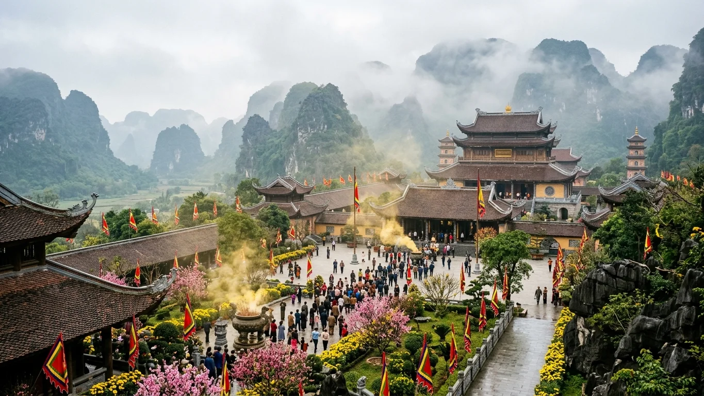
Tháng 1 - 3Mùa Xuân: Trẩy Lộc Cố Đô & Khai Hội Bái Đính
Thời điểm: Tháng 1 đến hết tháng 3 Âm lịchTiết trời se lạnh phảng phất mưa xuân lất phất, muôn hoa đâm chồi nảy lộc. Đây là thời khắc các lễ hội truyền thống lớn nhất Cố đô đồng loạt khai hội: Hội chùa Bái Đính, Lễ hội Hoa Lư, Lễ hội Tràng An đưa du khách trở về cội nguồn tâm linh thuần khiết.
Mùa Lúa Vàng: Bức Họa Tam Cốc Ngô Đồng
Thời điểm: Cuối tháng 5 đến giữa tháng 6 Dương lịchĐược bình chọn là một trong những cánh đồng lúa đẹp nhất Việt Nam, cánh đồng Tam Cốc khi vào hạ chuyển mình từ sắc xanh mạ non sang màu vàng ươm trù phú. Ánh nắng rực rỡ soi bóng những tháp karst kỳ vĩ tạo nên tuyệt tác thiên nhiên rực rỡ.
Mùa Sen Nở: Thanh Khiết Đầm Sen Hang Múa
Thời điểm: Tháng 6 đến tháng 8 Dương lịchKhi nắng hè rực rỡ trải vàng thung lũng, các đầm sen quanh Hang Múa, Đầm Vân Long đồng loạt bung nở tỏa hương thanh tao. Đi dạo trên cầu gỗ giữa hồ sen lúc bình minh sáng sớm là trải nghiệm thanh lọc tâm hồn tuyệt đối.
Mùa Thu - Đông: Bảng Lảng Sương Mờ & Chim Di Cư
Thời điểm: Tháng 9 đến tháng 12 Dương lịchTrời thu miền Bắc trong vắt, nước sông Tràng An xanh thấu đáy trông thấy rong rêu đuôi cáo uốn lượn. Về chiều, từng đàn cò trắng rủ nhau bay rợp trời Đầm Vân Long, tạo nên không gian nguyên sinh thanh bình thoát tục.
📸 5. Top 10 Thắng cảnh biểu tượng & Dấu tích lịch sử
Khám phá trọn vẹn 10 tọa độ check-in và di tích khảo cổ - danh thắng ngoạn mục nhất làm nên danh tiếng toàn cầu của Cố đô Ninh Bình:
1. Quần Thể Danh Thắng Tràng An — Thủy Đình
Hành trình chèo thuyền nan 3 tiếng qua hệ thống sông ngòi ngầm liên hoàn luồn qua hàng chục hang động tự nhiên và các đền phủ cổ kính giữa non cao.
2. Đỉnh Ngọa Long — Hang Múa
Tọa độ ngắm toàn cảnh thung lũng Tam Cốc và sông Ngô Đồng đẹp nhất thế giới lúc hoàng hôn và bình minh.
3. Tam Cốc — Ba Hang Xuyên Thủy
Được mệnh danh Nam thiên đệ nhị động, nơi lưu giữ kỹ nghệ chèo thuyền bằng chân độc đáo của người chèo đò bản địa.
4. Quần Thể Chùa Bái Đính — Trung Tâm Phật Giáo
Quần thể chùa rộng 539ha gồm Bái Đính Cổ Tự nghìn năm và Bái Đính Tân Tự nguy nga với Bảo tháp Xá lợi Phật cao 100m.
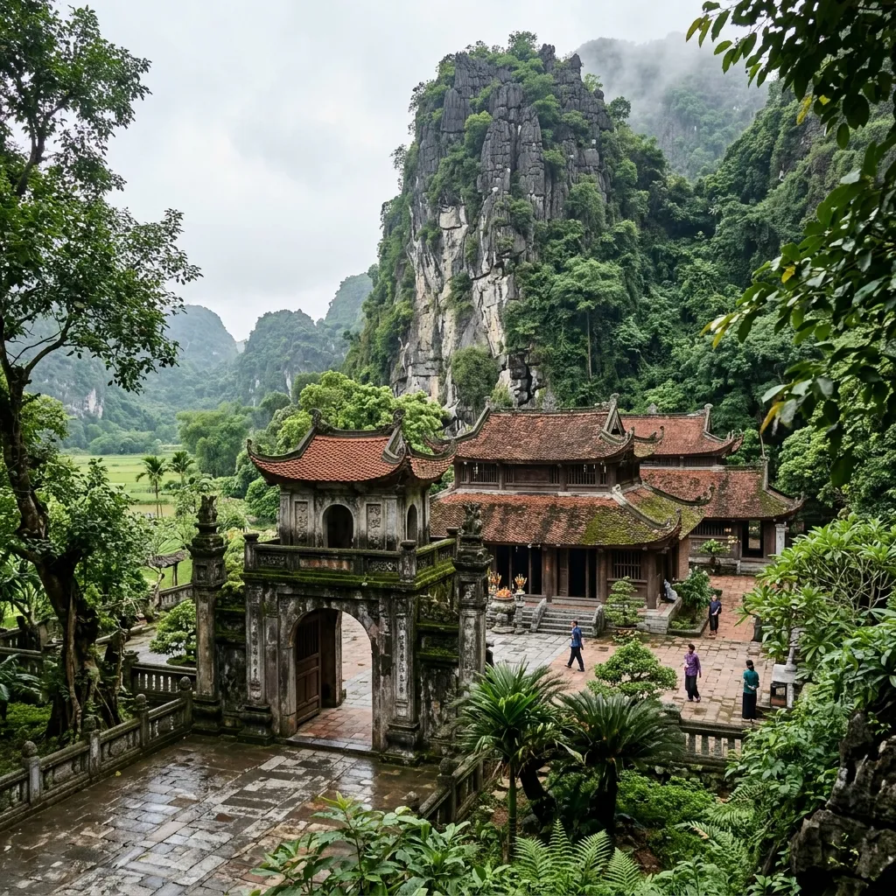
5. Cố Đô Hoa Lư — Dấu Tích Ngàn Năm
Thành lũy đá tự nhiên che chở cho hai triều đại Đinh và Tiền Lê, lưu giữ giá trị lịch sử và bảo vật quốc gia sập đá hoa văn rồng cuộn.
6. Đầm Vân Long — Vịnh Không Sóng
Không gian hoang sơ không có tiếng động cơ cano, chỉ có tiếng mái chèo tre rẽ nước và tiếng chim hót giữa núi đá Cô Tiên.
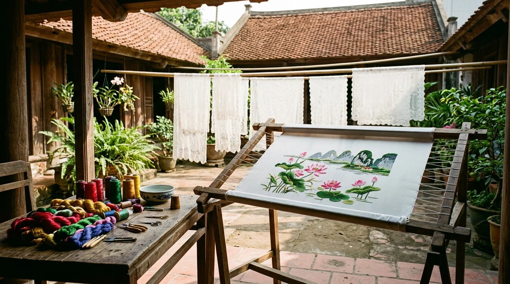
7. Làng Nghề Thêu Ren Văn Lâm — Tinh Hoa Bàn Tay Vàng 7 Thế Kỷ
Cái nôi thêu ren thủ công trứ danh miền Bắc gắn liền thời nhà Trần mở cõi, nơi nghệ nhân cần mẫn luồn từng sợi chỉ tơ dệt nên gấm vóc hoa sen và không gian làng cổ Cố Viên Lầu trầm mặc.
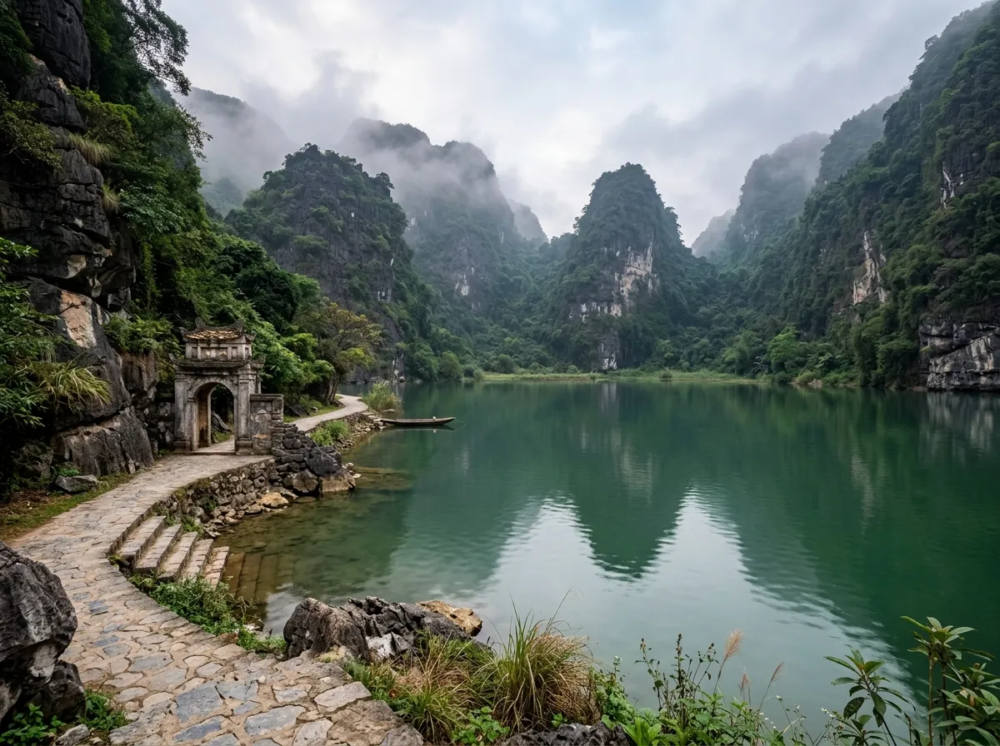
8. Động Am Tiên — Tuyệt Tịnh Cốc
Hồ nước xanh như ngọc bích nằm lọt thỏm giữa bốn bề vách núi đá dựng đứng, chốn bồng lai thanh tịnh thoát tục.
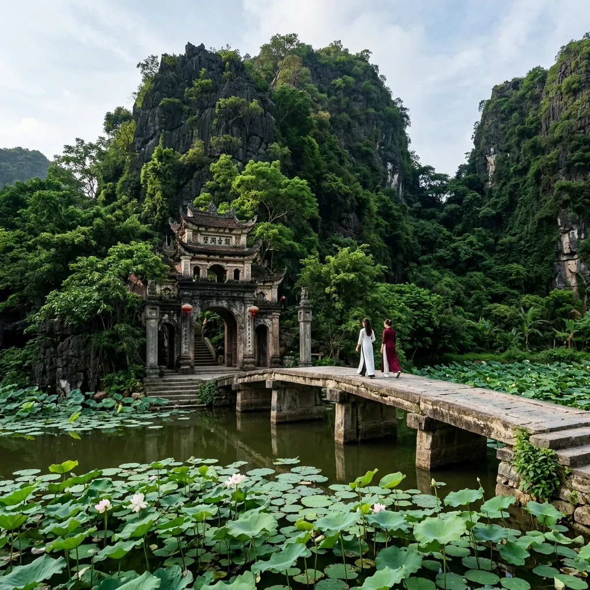
9. Chùa Bích Động — Cổ Tự Trong Hang
Cổng chùa bằng đá rêu phong soi bóng hồ sen thơm ngát, dẫn lối lên các tầng hang động tĩnh mịch linh thiêng.
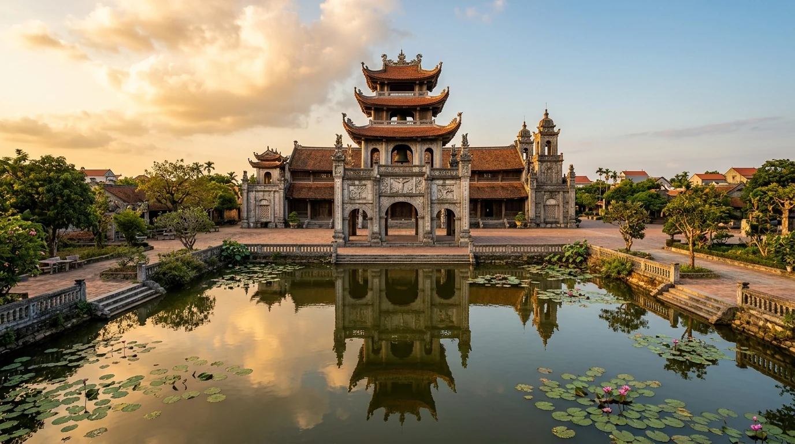
10. Quần Thể Nhà Thờ Đá Phát Diệm — Trầm Tích Đá Giao Thoa Đông Tây
Kiệt tác kiến trúc đá độc bản thế giới xây dựng ròng rã 24 năm bằng đá khối và gỗ lim, nơi mái đình cong thuần Việt giao thoa tuyệt mỹ cùng thánh đường Công giáo và đền Thái Vi hào khí Đông A.
🚗 6. Cẩm nang di chuyển & Cung đường giao thông
Chỉ cách trung tâm thủ đô Hà Nội khoảng 90km về phía nam, Ninh Bình có hạ tầng giao thông kết nối hoàn hảo và thuận tiện bậc nhất miền Bắc:
| Phương tiện | Thời gian di chuyển | Mức giá ước tính | Đặc điểm & Lời khuyên |
|---|---|---|---|
| Xe Limousine Dcar cao cấp | 1 giờ 15 phút - 1 giờ 30 phút | 135.000 - 160.000 đ/vé | Đón trả tận nơi tại Hà Nội và trả về tận khách sạn/homestay Tràng An, Tam Cốc. Xe chạy cao tốc êm ái. |
| Tàu hỏa Bắc - Nam (SE/TN) | 2 giờ - 2 giờ 15 phút | 70.000 - 130.000 đ/vé | Khởi hành từ Ga Hà Nội tới Ga Ninh Bình (trung tâm TP). Trải nghiệm ngắm cảnh đồng quê thanh bình, an toàn tuyệt đối. |
| Ô tô cá nhân / Xe tự lái | 1 giờ 15 phút | ~100.000 đ phí BOT | Tuyến cao tốc Pháp Vân - Cầu Giẽ - Cao Bồ - Mai Sơn chạy thẳng vào trung tâm Ninh Bình rất thông thoáng. |
| Xe máy phượt tự do | 2 giờ 15 phút | ~70.000 đ xăng | Đi theo Quốc lộ 1A cũ qua Thường Tín, Phủ Lý, Hà Nam. Phù hợp cho các bạn trẻ thích tự do dừng chân chụp ảnh. |
Di chuyển nội địa tại Ninh Bình:
- Thuê xe máy: Giá từ 100.000 - 150.000 VNĐ/ngày. Đây là phương tiện linh hoạt nhất để len lỏi qua các cung đường thung lũng đá vôi Tam Cốc - Hang Múa - Tràng An.
- Thuê xe đạp dạo thôn quê: Các homestay tại Tam Cốc và Tràng An thường cho thuê hoặc mượn xe đạp miễn phí. Đạp xe trên con đường làng ngắm đồng lúa chín và đàn trâu gặm cỏ là nét văn hóa đặc trưng.
- Taxi & Xe điện du lịch: Xe điện phục vụ rộng rãi tại Quần thể chùa Bái Đính và Cố đô Hoa Lư (30.000 - 50.000 VNĐ/lượt). Taxi truyền thống và taxi điện Mai Linh, Xanh SM hoạt động 24/7.
🍲 7. Tinh hoa ẩm thực đặc sản
Ẩm thực Ninh Bình mang đậm dấu ấn của vùng núi đá vôi vôi hóa tự nhiên và đầm lầy trũng nước. Những đàn dê chạy nhảy gặm lá thuốc trên vách đá tai mèo kết hợp hạt ngọc trời đồng chiêm trũng đã kiến tạo nên những món ăn danh bất hư truyền:
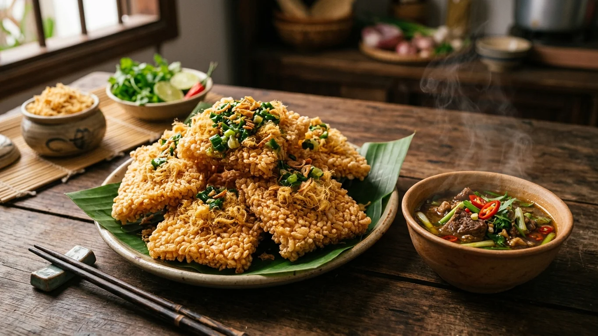
1. Cơm Cháy Chà Bông Sốt Dê
Miếng cơm cháy vàng ươm, giòn rụm không gắt dầu, quết thêm lớp mỡ hành óng ánh và chà bông sợi tơi xốp. Bí quyết làm nên sự thăng hoa là bát nước sốt sền sệt nấu từ tim cật thịt dê núi nêm nếm đậm đà cay nồng tiêu ớt.
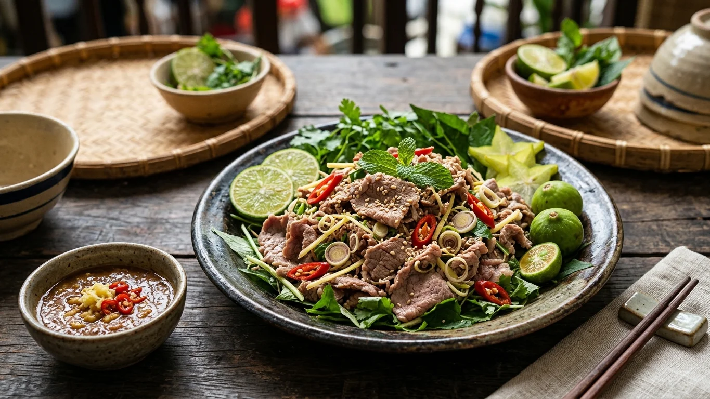
2. Thịt Dê Tái Chanh Cuộn Lá Sung
Dê núi Ninh Bình được thả rông trên núi đá ăn các loại lá cây thuốc quý nên thịt săn chắc, thơm ngọt tự nhiên không hề có mùi gây. Vị chua thanh của chanh, cay ấm của gừng sả hòa quyện cùng vị chát bùi của lá sung và độ đậm đà của tương Bần.
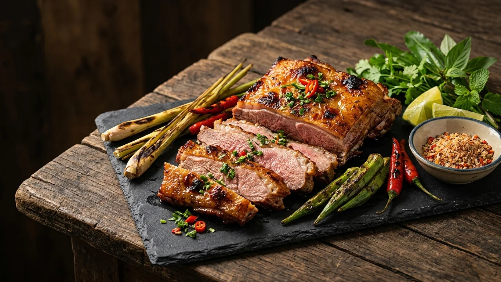
3. Dê Núi Nướng Tảng Than Hoa
Tảng thịt dê dày dặn xèo xèo trên vỉ than hồng, tỏa ra mùi thơm ngào ngạt của gia vị núi rừng. Miếng thịt cắt lát nóng hổi giữ trọn vẹn vị ngọt nguyên bản, chấm cùng muối hạt tiêu rừng hoặc chao ớt béo ngậy khiến thực khách say đắm.
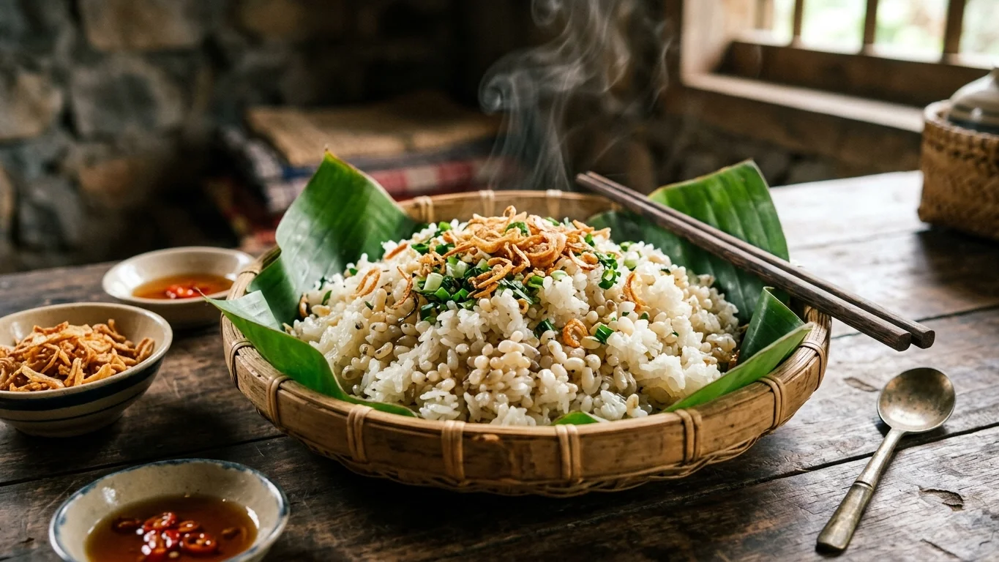
4. Xôi Trứng Kiến Nho Quan
Món ăn quý hiếm mang phong vị núi rừng Cúc Phương. Khi thưởng thức, từng hạt trứng kiến vỡ tí tách trong khoang miệng, giải phóng vị béo ngậy, bùi bùi đặc trưng kết hợp với hạt xôi nếp nương dẻo quánh thơm lừng hành phi giòn tan.
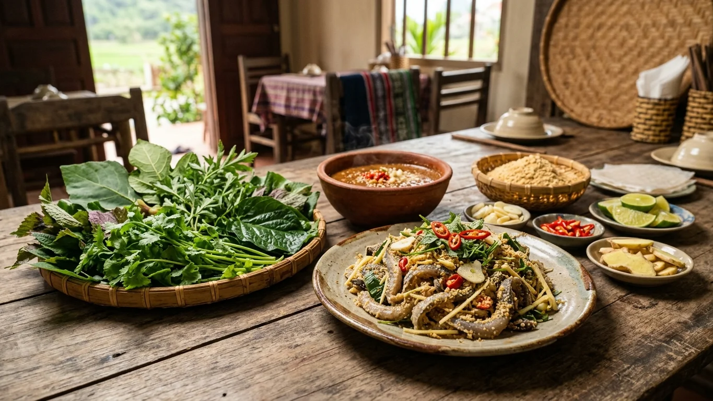
5. Gỏi Cá Nhệch Kim Sơn
Cá nhệch sống ở vùng đầm phá nước lợ cửa biển Kim Sơn có thịt dai ngọt đặc biệt. Thực khách cuộn lá sung, lá ổi, mơ lông, đinh lăng thành hình phễu, cho thịt cá nhệch vào trong rồi chan đẫm nước chẻo nóng hổi đậm đà, tạo nên hương vị bùng nổ khó quên.
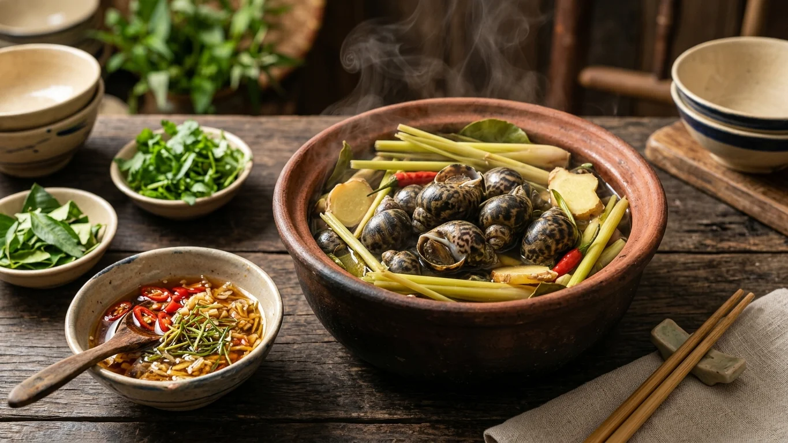
6. Ốc Núi Tam Điệp Hấp Sả Gừng
Khác hẳn ốc nước ngọt thông thường, thịt ốc núi Tam Điệp dày, giòn sần sật và phảng phất vị thơm thuốc bắc thanh tao tự nhiên. Ốc chấm vào bát nước mắm gừng ớt tỏi ớt chua ngọt tạo nên trải nghiệm ẩm thực gây nghiện cho mọi thực khách sành ăn.
🎟️ 8. Bảng giá vé tham quan & Dịch vụ thuyền đò niêm yết
Bảng tổng hợp biểu giá vé tham quan và dịch vụ thuyền đò được niêm yết chính thức tại các điểm danh thắng trọng điểm của tỉnh Ninh Bình (Cập nhật năm 2026):
| Khu Danh Thắng / Di Tích | Vé Người Lớn | Vé Trẻ Em (1m - 1m3) | Dịch Vụ Bao Gồm / Ghi Chú |
|---|---|---|---|
| Khu Du Lịch Sinh Thái Tràng An | 250.000 đ/người | 120.000 đ/người | Bao gồm vé thắng cảnh & thuyền đò 3-4 người/thuyền theo 1 trong 3 tuyến tham quan. |
| Danh Thắng Tam Cốc — Bích Động | 120.000 đ vé + 150.000 đ đò | 60.000 đ vé cảnh | Đò chở tối đa 2 khách quốc tế hoặc 4 khách Việt Nam. Chùa Bích Động miễn phí vé vào cổng. |
| Khu Du Lịch Hang Múa (Ngọa Long Sơn) | 100.000 đ/người | Miễn phí dưới 1m | Tham quan hang động, leo 486 bậc thang đỉnh núi và check-in đầm sen trái tim. |
| Khu Di Tích Cố Đô Hoa Lư | 20.000 đ/người | 10.000 đ/người | Tham quan Đền vua Đinh Tiên Hoàng và Đền vua Lê Đại Hành. |
| Động Am Tiên (Tuyệt Tịnh Cốc) | 50.000 đ/người | 25.000 đ/người | Bao gồm vé tham quan lòng hồ, cổng thành cổ và chùa Am Tiên trên vách núi. |
| Khu Bảo Tồn Thiên Nhiên Đầm Vân Long | 20.000 đ vé + 60.000 đ đò | 35.000 đ trọn gói | Thuyền nan tre chở 2 người/thuyền, hành trình ngắm chim và cảnh non nước 1.5 tiếng. |
| Quần Thể Chùa Bái Đính | Miễn phí vãn cảnh | Miễn phí | Xe điện: 30.000 đ/chiều (60.000 đ khứ hồi); Vé lên Bảo Tháp xá lợi: 50.000 đ/người. |
| Vườn Quốc Gia Cúc Phương | 60.000 đ/người | 10.000 - 20.000 đ | Tham quan rừng nguyên sinh, cây Chò ngàn năm, Trung tâm cứu hộ linh trưởng. |
🧭 9. Gợi ý lịch trình & Mẹo trải nghiệm bản địa an toàn
Để tận hưởng trọn vẹn kỳ nghỉ dưỡng di sản vừa thư thái vừa ngắm trọn vẹn những khoảnh khắc đẹp nhất trong ngày, GO FAR đề xuất lịch trình trải nghiệm tối ưu 3 Ngày 2 Đêm:
Lịch trình gợi ý 3N2Đ: "Sắc Nắng Tràng An — Dấu Tích Ngàn Năm"
Ngày 1: Hà Nội — Tràng An Tuyệt Cảnh — Chiều Hoàng Hôn Hang Múa
- 07h30: Xe Limousine đón từ Hà Nội, chạy cao tốc về Ninh Bình, nhận phòng homestay hoặc resort tại Tràng An/Tam Cốc.
- 09h30: Lên thuyền tham quan Tuyến 2 Tràng An (qua Hang Lấm, Hang Vạng, Thủy Đình, phim trường Kong cũ).
- 12h30: Ăn trưa đặc sản thịt dê núi tái chanh và cơm cháy chà bông.
- 15h30: Chinh phục 486 bậc thang đá Đỉnh Ngọa Long Hang Múa đón hoàng hôn buông xuống dòng sông Ngô Đồng.
- 19h00: Khám phá Phố cổ Hoa Lư rực rỡ ánh đèn lồng về đêm, thưởng thức ẩm thực đường phố và dạo quanh hồ Kỳ Lân.
Ngày 2: Cố Đô Hoa Lư — Tuyệt Tịnh Cốc Am Tiên — Bái Đính Cổ Tự
- 08h00: Thăm Khu di tích Cố đô Hoa Lư, dâng hương Đền Vua Đinh và Vua Lê, chiêm bái sập đá hoa văn rồng cuộn.
- 10h00: Khám phá hồ nước ngọc bích Động Am Tiên (Tuyệt Tịnh Cốc), đạp xe quanh bờ hồ rợp bóng cây xanh.
- 12h30: Ăn trưa tại nhà hàng đặc sản địa phương, thưởng thức món dê nướng tảng thơm lừng.
- 14h30: Chiêm bái Quần thể Chùa Bái Đính, đi dọc hành lang 500 vị La Hán và ngắm hoàng hôn từ Bảo tháp Xá lợi Phật.
- Tối: Nghỉ ngơi thư giãn tại resort, tận hưởng không gian thanh tịnh của núi rừng Cố đô.
Ngày 3: Tam Cốc Mùa Lúa Vàng — Chùa Bích Động — Trở Về Hà Nội
- 07h00: Đi thuyền sớm tại Tam Cốc khi nắng vừa lên, tận hưởng làn gió mát lành và mùi hương đồng nội lúa chín.
- 09h30: Check-in cổng chùa cổ Bích Động soi bóng hồ súng tím ngát hương.
- 11h30: Mua sắm đặc sản làm quà: cơm cháy chà bông đóng gói chân không, nem chua Yên Mạc, mắm tép Gia Viễn.
- 14h00: Lên xe Limousine trở về thủ đô Hà Nội, kết thúc chuyến hành trình khám phá di sản trọn vẹn.
Mẹo an toàn & Trải nghiệm bản địa văn minh:
- Tuân thủ mặc áo phao: Khi đi đò tại Tràng An, Tam Cốc hay Vân Long, hãy luôn cài khóa áo phao an toàn đúng quy cách suốt chuyến đi vì lòng sông và hang động có nhiều đoạn nước sâu.
- Trang phục leo Hang Múa: Cung đường bậc thang đá Hang Múa dốc đứng và khá trơn khi trời mưa phùn, hãy mang giày thể thao bám dính tốt, mang theo chai nước lọc và mũ nón che nắng.
- Văn hóa boa tiền tip người chèo đò: Các cô chú chèo đò phục vụ liên tục 2.5 - 3 tiếng bằng cả đôi chân và đôi tay rất vất vả, hãy bồi dưỡng một khoản tiền tip nhỏ (từ 50.000 - 100.000 VNĐ/thuyền) để khích lệ tinh thần bà con.
- Trang phục đền chùa tôn nghiêm: Khi ghé thăm Cố đô Hoa Lư, Đền Thái Vi, Chùa Bái Đính và Chùa Bích Động, cần mặc trang phục kín đáo, lịch sự qua đầu gối, không nói to làm mất không gian thanh tịnh.